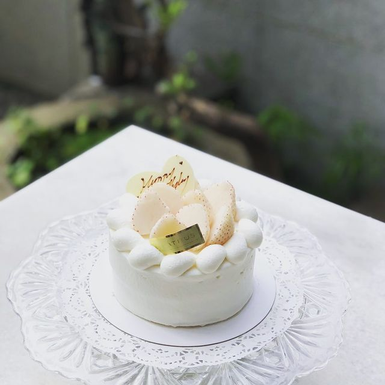

Tokutoku- matcha&coffee
Citrus 蜜柑
Ugly Cheese
心得

來自法國藍帶甜點兄弟 Citrus 蜜柑
說起熱愛甜點的國家，法國也是名列前茅，正因為喜愛法國的餐飲文化，
蜜柑Citrus的老闆兄弟倆，為了追著甜點夢，放下工程師的身份遠赴法國藍帶學習！
學成後開設甜點店，由原負賣甜點、弟弟Andrew負責麵包，品項多是法國最家常的甜點，
像是招牌香檸，外層裹著綠檸檬糖霜、裡頭拌著黃檸檬果肉，大幅減低了蛋糕體的負擔
首頁
Tokutoku- matcha&coffee
Ugly Cheese
心得